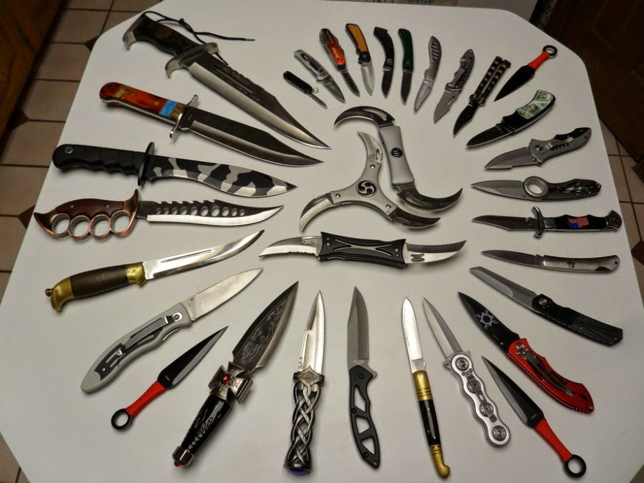

Arma branca ("white arm" ou "cold weapon" em inglês), designa um objeto que possa ser utilizado agressivamente, para defesa ou ataque, mas cuja utilização normal é outra, geralmente para trabalho. Machados, facas e martelos são armas brancas; já outras armas como pistolas e rifles, por exemplo, não se incluem nessa categoria, pois são armas de fogo e a sua finalidade primária é ferir um oponente.
Noutra definição, arma branca é todo objeto criado para ferir alguém, independentemente de levar a morte ou não, como espada; soco inglês; chuço; punhal; nunchaku; etc. Nesta definição, objetos como faca, facão, foice, tesoura, etc., não são armas brancas em virtude de seu fim não ser ferir a alguém, mas funções diversas, como cortar carnes, legumes, madeira, panos, etc. Agora, se estes objetos forem utilizados para ferir a alguém, serão chamados de "instrumentos do/de crime".
